2024 Advanced Higher Mathematics - Paper 1 marking instructions
Source: Scottish Qualifications Authority (SQA) / Qualifications Scotland. This is a StemInteract HTML companion, not an official HTML edition. Selectable text is supplied alongside original page images. Use the images or original PDF for equations, powers, fractions, vector notation, tables and diagrams; text extraction cannot fully preserve mathematical layout.
Jump to a question
PDF page 1
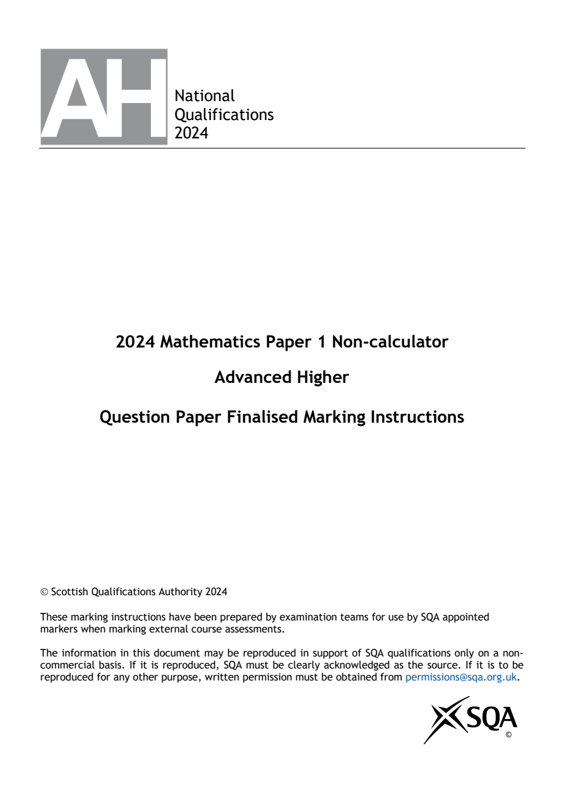
Selectable page text
National
Qualifications
2024
2024 Mathematics Paper 1 Non-calculator
Advanced Higher
Question Paper Finalised Marking Instructions
Scottish Qualifications Authority 2024
These marking instructions have been prepared by examination teams for use by SQA appointed
markers when marking external course assessments.
The information in this document may be reproduced in support of SQA qualifications only on a non-
commercial basis. If it is reproduced, SQA must be clearly acknowledged as the source. If it is to be
reproduced for any other purpose, written permission must be obtained from permissions@sqa.org.uk.
©PDF page 2
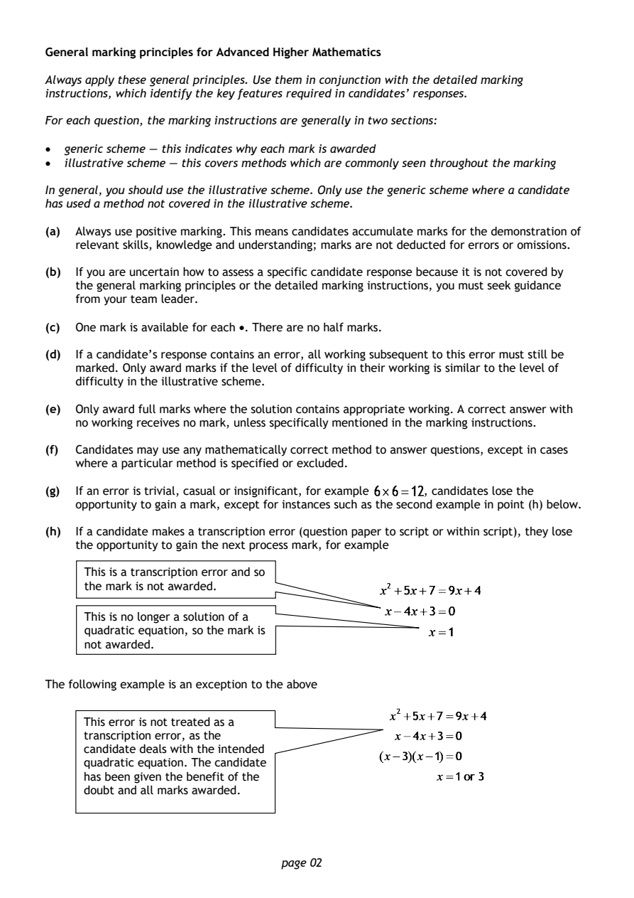
Selectable page text
General marking principles for Advanced Higher Mathematics
Always apply these general principles. Use them in conjunction with the detailed marking
instructions, which identify the key features required in candidates’ responses.
For each question, the marking instructions are generally in two sections:
• generic scheme — this indicates why each mark is awarded
• illustrative scheme — this covers methods which are commonly seen throughout the marking
In general, you should use the illustrative scheme. Only use the generic scheme where a candidate
has used a method not covered in the illustrative scheme.
(a) Always use positive marking. This means candidates accumulate marks for the demonstration of
relevant skills, knowledge and understanding; marks are not deducted for errors or omissions.
(b) If you are uncertain how to assess a specific candidate response because it is not covered by
the general marking principles or the detailed marking instructions, you must seek guidance
from your team leader.
(c) One mark is available for each •. There are no half marks.
(d) If a candidate’s response contains an error, all working subsequent to this error must still be
marked. Only award marks if the level of difficulty in their working is similar to the level of
difficulty in the illustrative scheme.
(e) Only award full marks where the solution contains appropriate working. A correct answer with
no working receives no mark, unless specifically mentioned in the marking instructions.
(f) Candidates may use any mathematically correct method to answer questions, except in cases
where a particular method is specified or excluded.
(g) If an error is trivial, casual or insignificant, for example , candidates lose the
opportunity to gain a mark, except for instances such as the second example in point (h) below.
(h) If a candidate makes a transcription error (question paper to script or within script), they lose
the opportunity to gain the next process mark, for example
This is a transcription error and so
the mark is not awarded.
This is no longer a solution of a
quadratic equation, so the mark is
not a warded.
The following example is an exception to the above
This error is not treated as a
transcription error, as the
candidate deals with the intended
quadratic equation. The candidate
has been given the benefit of the
doubt and all marks awarded.
page 02PDF page 3
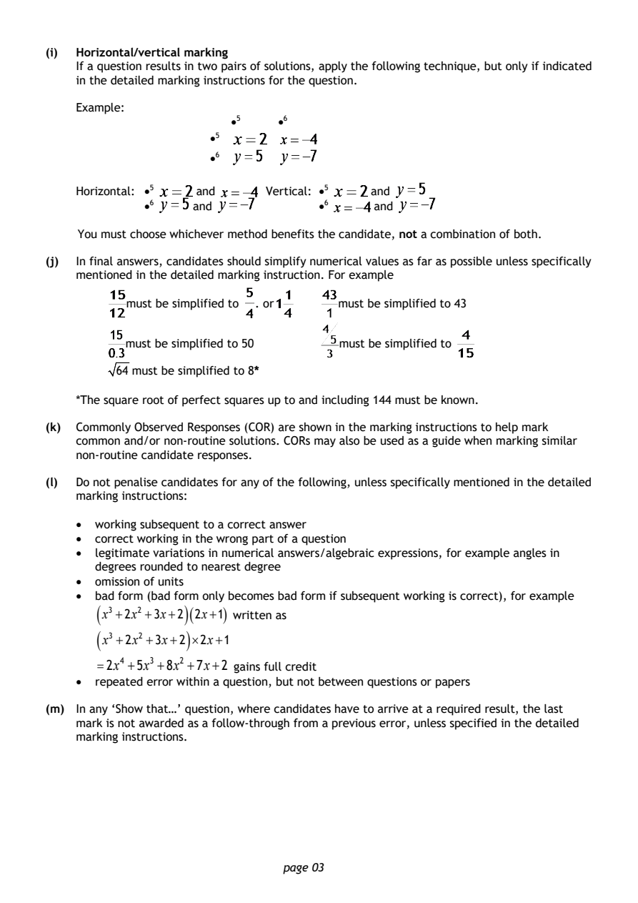
Selectable page text
(i) Horizontal/vertical marking
If a question results in two pairs of solutions, apply the following technique, but only if indicated
in the detailed marking instructions for the question.
Example:
•5 •6
•5
•6
Horizontal: •5 and Vertical: •⁵ and
•6 and •6 and
You must choose whichever method benefits the candidate, not a combination of both.
(j) In final answers, candidates should simplify numerical values as far as possible unless specifically
mentioned in the detailed marking instruction. For example
must be simplified to . or must be simplified to 43
must be simplified to 50 must be simplified to
64 must be simplified to 8*
*The square root of perfect squares up to and including 144 must be known.
(k) Commonly Observed Responses (COR) are shown in the marking instructions to help mark
common and/or non-routine solutions. CORs may also be used as a guide when marking similar
non-routine candidate responses.
(l) Do not penalise candidates for any of the following, unless specifically mentioned in the detailed
marking instructions:
• working subsequent to a correct answer
• correct working in the wrong part of a question
• legitimate variations in numerical answers/algebraic expressions, for example angles in
degrees rounded to nearest degree
• omission of units
• bad form (bad form only becomes bad form if subsequent working is correct), for example
( x³ +2x² +3x+2 )( 2x+1 ) written as
( )
x³ +2x² +3x+2 ×2x+1
=2x⁴ +5x³ +8x² +7x+2 gains full credit
• repeated error within a question, but not between questions or papers
(m) In any ‘Show that…’ question, where candidates have to arrive at a required result, the last
mark is not awarded as a follow-through from a previous error, unless specified in the detailed
marking instructions.
page 03PDF page 4
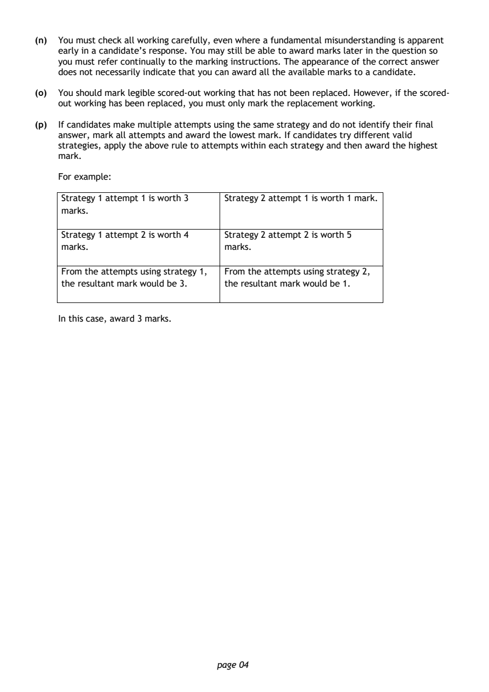
Selectable page text
(n) You must check all working carefully, even where a fundamental misunderstanding is apparent
early in a candidate’s response. You may still be able to award marks later in the question so
you must refer continually to the marking instructions. The appearance of the correct answer
does not necessarily indicate that you can award all the available marks to a candidate.
(o) You should mark legible scored-out working that has not been replaced. However, if the scored-
out working has been replaced, you must only mark the replacement working.
(p) If candidates make multiple attempts using the same strategy and do not identify their final
answer, mark all attempts and award the lowest mark. If candidates try different valid
strategies, apply the above rule to attempts within each strategy and then award the highest
mark.
For example:
Strategy 1 attempt 1 is worth 3 Strategy 2 attempt 1 is worth 1 mark.
marks.
Strategy 1 attempt 2 is worth 4 Strategy 2 attempt 2 is worth 5
marks. marks.
From the attempts using strategy 1, From the attempts using strategy 2,
the resultant mark would be 3. the resultant mark would be 1.
In this case, award 3 marks.
page 04PDF page 5
Paper 1, Question 1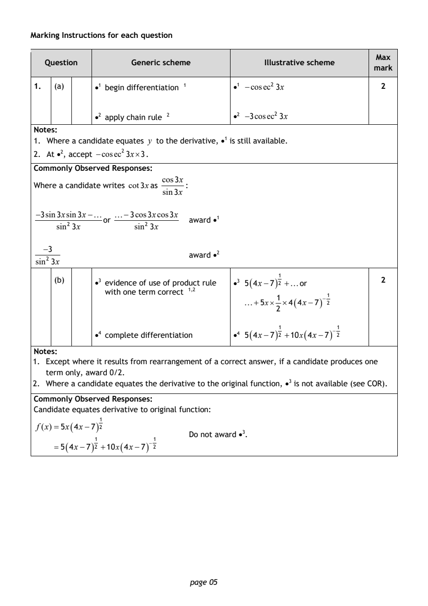
Selectable page text
Marking Instructions for each question
Max
Question Generic scheme Illustrative scheme
mark
1. (a) •1 begin differentiation ¹ •1 −cosec²3x 2
•2 apply chain rule ² •2 −3cosec²3x
Notes:
1. Where a candidate equates y to the derivative, •¹ is still available.
2. At •², accept −cosec²3x×3.
Commonly Observed Responses:
cos3x
Where a candidate writes cot3xas :
sin3x
−3sin3xsin3x− −3cos3xcos3x
or award •¹
sin²3x sin²3x
−3
award •²
sin²3x
(b) •3 evidence of use of produ₂ct rule •3 5 ( 4x−7 ) ²¹ +or 2
with one term correct ¹^{,}
1
+5x× ×4 ( 4x−7 ) ⁻²¹
2
•4 complete differentiation •4 5 ( 4x−7 ) ²¹ +10x ( 4x−7 ) ⁻²¹
Notes:
1. Except where it results from rearrangement of a correct answer, if a candidate produces one
term only, award 0/2.
2. Where a candidate equates the derivative to the original function, •³ is not available (see COR).
Commonly Observed Responses:
Candidate equates derivative to original function:
f(x) =5x ( 4x−7 ) ²¹
Do not award •³.
=5 ( 4x−7 ) ²¹ +10x ( 4x−7 ) ⁻²¹
page 05PDF page 6
Paper 1, Question 2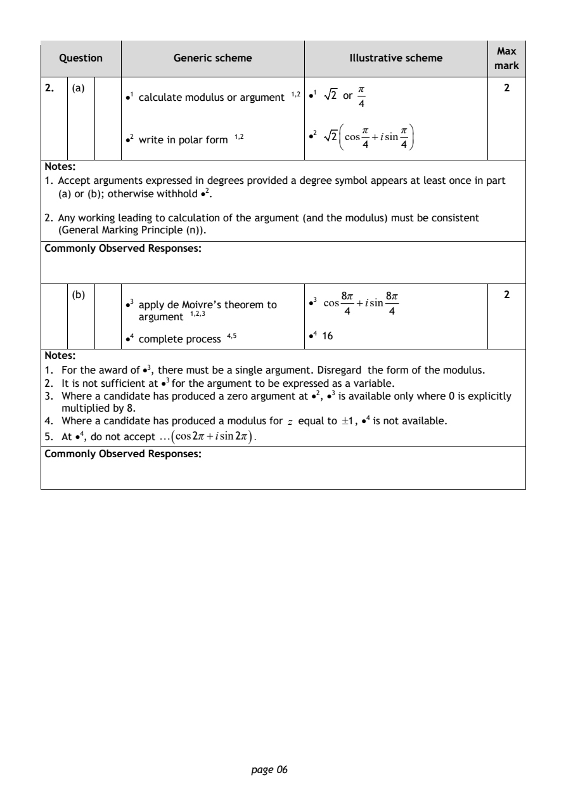
Selectable page text
Max
Question Generic scheme Illustrative scheme
mark
2. (a) π 2
•1 calculate modulus or argument ¹^{,}² •1 2 or
4
π π
•2 write in polar form ¹^{,}² •2 2cos +isin
4 4
Notes:
1. Accept arguments expressed in degrees provided a degree symbol appears at least once in part
(a) or (b); otherwise withhold •².
2. Any working leading to calculation of the argument (and the modulus) must be consistent
(General Marking Principle (n)).
Commonly Observed Responses:
(b) 8π 8π 2
•3 apply de Moi₂v_{,}₃re’s theorem to •3 cos +isin
4 4
argument ¹^{,}
•4 complete process ⁴^{,}⁵ •4 16
Notes:
1. For the award of •³, there must be a single argument. Disregard the form of the modulus.
2. It is not sufficient at •³ for the argument to be expressed as a variable.
3. Where a candidate has produced a zero argument at •², •3 is available only where 0 is explicitly
multiplied by 8.
4. Where a candidate has produced a modulus for z equal to ±1, •⁴ is not available.
5. At •⁴, do not accept ( cos2π +isin2π ) .
Commonly Observed Responses:
page 06PDF page 7
Paper 1, Question 3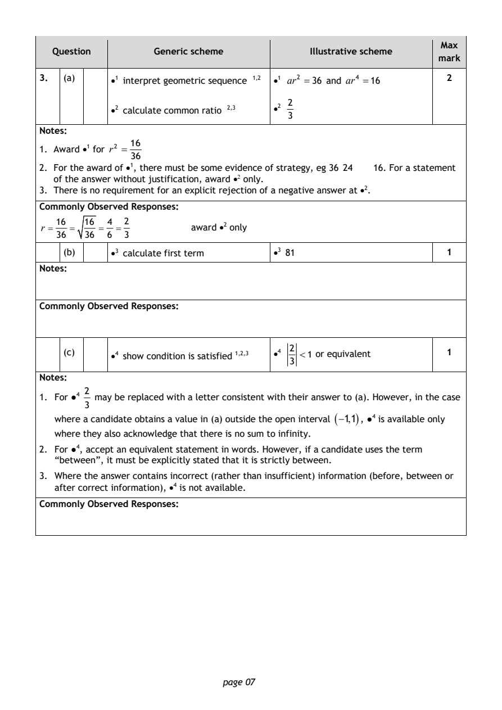
Selectable page text
Max
Question Generic scheme Illustrative scheme
mark
3. (a) •1 interpret geometric sequence ¹^{,}² •1 ar² =36 and ar⁴ =16 2
2
•2 calculate common ratio ²^{,}³ •2
3
Notes:
16
1. Award •¹ for r² =
36
2. For the award of •¹, there must be some evidence of strategy, eg 36 24 16. For a statement
of the answer without justification, award •² only.
3. There is no requirement for an explicit rejection of a negative answer at •².
Commonly Observed Responses:
16 16 4 2
r = = = = award •² only
36 36 6 3
(b) •3 calculate first term •3 81 1
Notes:
Commonly Observed Responses:
2
(c) •4 show condition is satisfied ¹^{,}²^{,}³ •4 <1 or equivalent 1
3
Notes:
2
1. For ●⁴ may be replaced with a letter consistent with their answer to (a). However, in the case
3
where a candidate obtains a value in (a) outside the open interval (−1,1) , ●⁴ is available only
where they also acknowledge that there is no sum to infinity.
2. For ●⁴, accept an equivalent statement in words. However, if a candidate uses the term
“between”, it must be explicitly stated that it is strictly between.
3. Where the answer contains incorrect (rather than insufficient) information (before, between or
after correct information), •⁴ is not available.
Commonly Observed Responses:
page 07PDF page 8
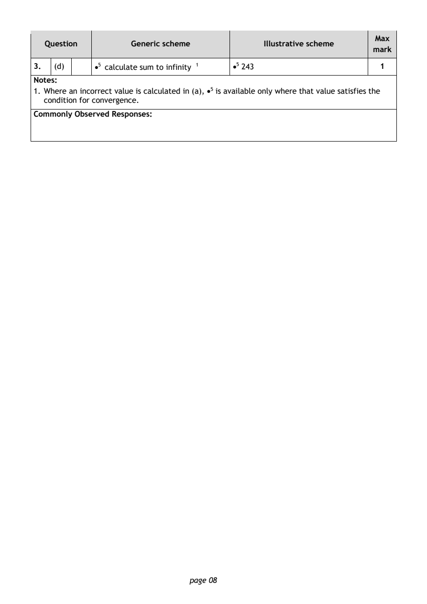
Selectable page text
Max
Question Generic scheme Illustrative scheme
mark
3. (d) •5 calculate sum to infinity ¹ •5 243 1
Notes:
1. Where an incorrect value is calculated in (a), •⁵ is available only where that value satisfies the
condition for convergence.
Commonly Observed Responses:
page 08PDF page 9
Paper 1, Question 4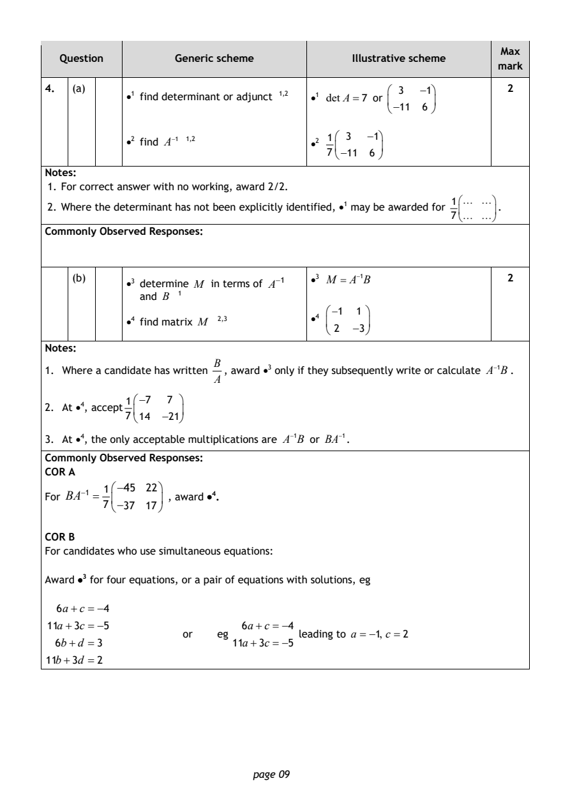
Selectable page text
Max
Question Generic scheme Illustrative scheme
mark
4. (a) 3 −1 2
•1 find determinant or adjunct ¹^{,}² •1 det A=7 or
−11 6
1 3 −1
•2 find A⁻¹ ¹^{,}2 •2
7−11 6
Notes:
1. For correct answer with no working, award 2/2.
1
2. Where the determinant has not been explicitly identified, •¹ may be awarded for .
7
Commonly Observed Responses:
(b)
•3 determine M in terms of A⁻¹
•3 M = A⁻¹B 2
and B ¹
−1 1
•4 find matrix M ²^{,}³ •4
2 −3
Notes:
B
1. Where a candidate has written , award •³ only if they subsequently write or calculate A⁻¹B.
A
1−7 7
2. At •⁴, accept
714 −21
3. At •⁴, the only acceptable multiplications are A⁻¹B or BA⁻¹.
Commonly Observed Responses:
COR A
1−45 22
For BA⁻¹ = , award •⁴.
7−37 17
COR B
For candidates who use simultaneous equations:
Award •³ for four equations, or a pair of equations with solutions, eg
6a+c = −4
11a+3c = −5 6a+c = −4
or eg leading to a = −1, c =2
6b+d =3 11a+3c = −5
11b+3d = 2
page 09PDF page 10
Paper 1, Question 5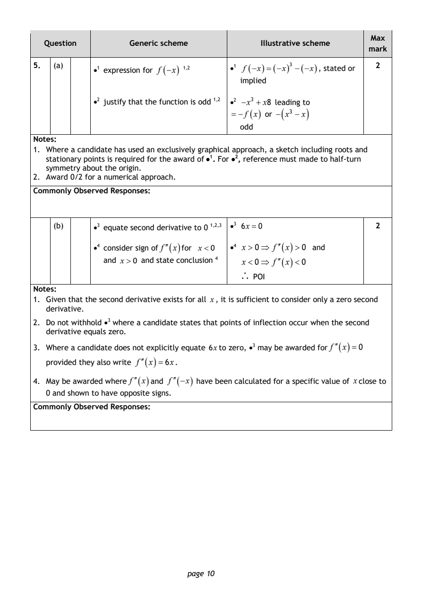
Selectable page text
Max
Question Generic scheme Illustrative scheme
mark
5. (a) •1 expression for f (−x ) ¹^{,}² •1 f (−x) =(−x)³ −(−x), stated or 2
implied
•2 justify that the function is odd ¹^{,}² •2 −x³ + x8 leading to
= −f ( x ) or − ( x³ −x )
odd
Notes:
1. Where a candidate has used an exclusively graphical approach, a sketch including roots and
stationary points is required for the award of •¹. For •², reference must made to half-turn
symmetry about the origin.
2. Award 0/2 for a numerical approach.
Commonly Observed Responses:
(b) •3 equate second derivative to 0 ¹^{,}²^{,}³ •3 6x =0 2
•4 consider sign of f′′( x ) for x<0 •4 x > 0⇒ f ′′( x ) > 0 and
and x>0 and state conclusion ⁴ x < 0⇒ f ′′( x )< 0
∴
POI
Notes:
1. Given that the second derivative exists for all x, it is sufficient to consider only a zero second
derivative.
2. Do not withhold •³ where a candidate states that points of inflection occur when the second
derivative equals zero.
3. Where a candidate does not explicitly equate 6xto zero, •³ may be awarded for f ′′( x ) =0
provided they also write f ′′( x ) =6x.
4. May be awarded where f
′′(
x
)
and f
′′(−x )
have been calculated for a specific value of xclose to
0 and shown to have opposite signs.
Commonly Observed Responses:
page 10PDF page 11
Paper 1, Question 6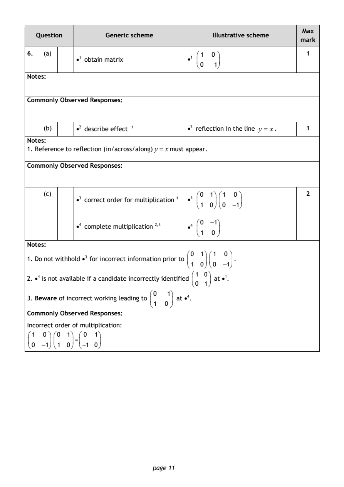
Selectable page text
Max
Question Generic scheme Illustrative scheme
mark
6. (a) 1 0 1
•1 obtain matrix •1
0 −1
Notes:
Commonly Observed Responses:
(b) •2 describe effect ¹ •2 reflection in the line y = x. 1
Notes:
1. Reference to reflection (in/across/along) y = xmust appear.
Commonly Observed Responses:
(c) 0 1 1 0 2
•3 correct order for multiplication ¹ •3
1 0 0 −1
0 −1
•4 complete multiplication ²^{,}³ •4
1 0
Notes:
0 1 1 0
1. Do not withhold •³ for incorrect information prior to .
1 0 0 −1
1 0
2. •⁴ is not available if a candidate incorrectly identified at •¹.
0 1
0 −1
3. Beware of incorrect working leading to at •⁴.
1 0
Commonly Observed Responses:
Incorrect order of multiplication:
1 0 0 1 0 1
=
0 −1 1 0 −1 0
page 11PDF page 12
Paper 1, Question 7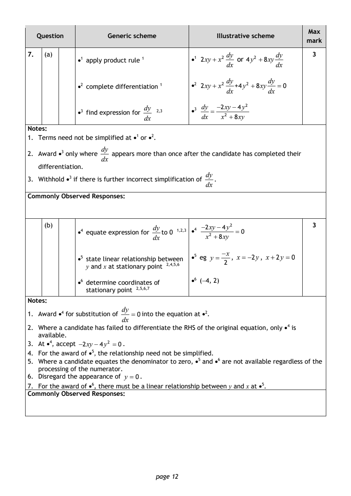
Selectable page text
Max
Question Generic scheme Illustrative scheme
mark
7. (a) dy dy 3
•1 apply product rule ¹ •1 2xy+ x² or 4y² +8xy
dx dx
dy dy
•2 complete differentiation ¹ •2 2xy+ x² +4y² +8xy = 0
dx dx
•3 find expression for dy ₂_{,}₃ •3 dy = −2xy−4y²
dx dx x² +8xy
Notes:
1. Terms need not be simplified at •¹ or •².
dy
2. Award •³ only where appears more than once after the candidate has completed their
dx
differentiation.
dy
3. Withhold •³ if there is further incorrect simplification of .
dx
Commonly Observed Responses:
(b) dy −2xy−4y² 3
•4 equate expression for to 0 ¹^{,}²^{,}3 •4 =0
dx x² +8xy
−x
•5 state linear relationship betw_{,}e₅_{,}e₆n •5 eg y = , x = −2y, x+2y = 0
2
y and x at stationary point ²^{,}⁴
•6 determine coordina₅_{,}t₆_{,}e₇s of •6 (−4, 2)
stationary point ²^{,}
Notes:
dy
1. Award •⁴ for substitution of = 0into the equation at •².
dx
2. Where a candidate has failed to differentiate the RHS of the original equation, only •⁴ is
available.
3. At •⁴, accept −2xy−4y² =0.
4. For the award of •⁵, the relationship need not be simplified.
5. Where a candidate equates the denominator to zero, •⁵ and •⁶ are not available regardless of the
processing of the numerator.
6. Disregard the appearance of y = 0.
7. For the award of •⁶, there must be a linear relationship between y and x at •⁵.
Commonly Observed Responses:
page 12PDF page 13
Paper 1, Question 8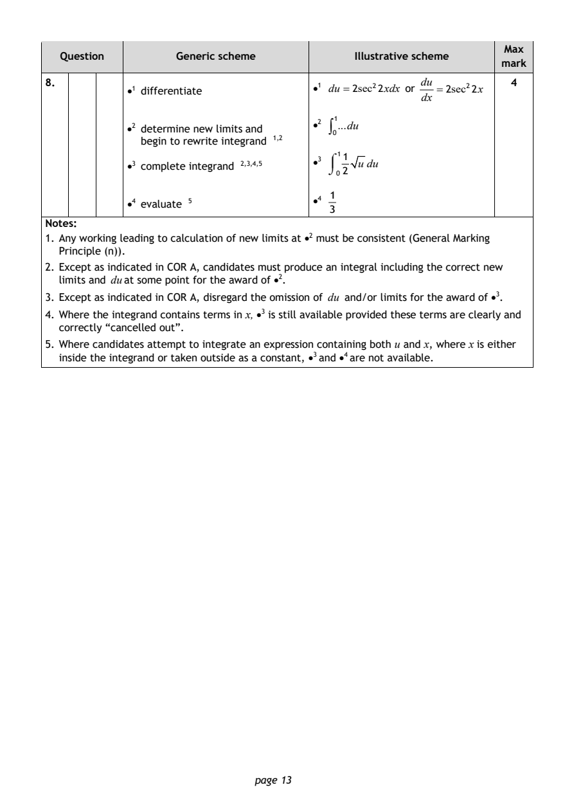
Selectable page text
Max
Question Generic scheme Illustrative scheme
mark
8. du 4
•1 differentiate •1 du =2sec²2xdx or =2sec²2x
dx
1
•2 determine new limits and •2 ∫ ...du
0
begin to rewrite integrand ¹^{,}²
•3 complete integrand ²^{,}³^{,}4,5 •3 ⌠
11
u du
⌡ 2
0
1
•4 evaluate ⁵
•4
3
Notes:
1. Any working leading to calculation of new limits at •² must be consistent (General Marking
Principle (n)).
2. Except as indicated in COR A, candidates must produce an integral including the correct new
limits and duat some point for the award of •².
3. Except as indicated in COR A, disregard the omission of du and/or limits for the award of •³.
4. Where the integrand contains terms in x, •³ is still available provided these terms are clearly and
correctly “cancelled out”.
5. Where candidates attempt to integrate an expression containing both u and x, where x is either
inside the integrand or taken outside as a constant, •³ and •⁴ are not available.
page 13PDF page 14
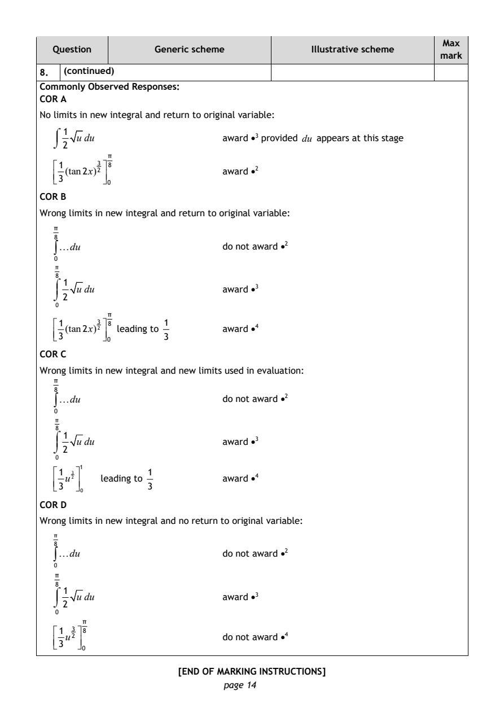
Selectable page text
Max
Question Generic scheme Illustrative scheme
mark
8. (continued)
Commonly Observed Responses:
COR A
No limits in new integral and return to original variable:
⌠ 1
u du award •³ provided du appears at this stage
⌡ 2
π
1
(tan2x)²³ ⁸ award •²
3
0
COR B
Wrong limits in new integral and return to original variable:
π
8
∫du do not award •²
0
π
8
⌠ 1
u du award •³
⌡ 2
0
π
1 1
(tan2x)³² ⁸ leading to award •⁴
3 3
0
COR C
Wrong limits in new integral and new limits used in evaluation:
π
8
∫du do not award •²
0
π
8
⌠ 1
u du award •³
⌡ 2
0
1
1 1
u³² leading to award •⁴
3 3
0
COR D
Wrong limits in new integral and no return to original variable:
π
8
∫du do not award •²
0
π
8
⌠ 1
u du award •³
⌡ 2
0
π
1
u²³ ⁸ do not award •⁴
3
0
[END OF MARKING INSTRUCTIONS]
page 14